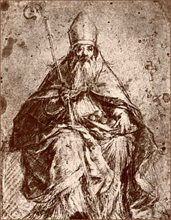

The Translation of St. Nicholas
(Greek Anonymous Account, 13th Century
Manuscript – Part 3)
“The men of Bari, then, having taken up the
venerable and holy remains of our blessed and inspired Father, placed them with
great reverence in a very small wooden chest. Then at sunset, when a favorable
breeze had arisen, upon a calm sea they set forth on their long voyage, and
that night they drew nigh to a place called Caccabus (modern Kekowa). Then they
arrived at Majesta (probably the island Meis). Then they went far out to sea
and were hindered by adverse winds; in front of them lay the north as far as
Patara, where the Blessed had received his birth. Having arrived at that city
amid a great storm, they concluded that the Saint did not want to journey with
them and was not allowing them to sail further. Nevertheless, they forced their
way twentyfour miles further, and then, unable to advance more, having met up
with a great calm, they sailed back to the harbor of Perdicca. When they had
reached the shore they found the sea at rest, and the wind which had been
adverse when they were sailing now favorable to them. And they said to one
another: ‘See that none of us has wished to steal some part of the venerable
relics, but let each one furnish scrupulously what he has taken.’ The sailors,
moreover who had decided to bind themselves with fearful oaths not to keep any
of the remains of the Saint, immediately supplemented the word with deed. Each
of them, who had taken some of the sacred remains, made open confession and
after having proffered and placed their portions with the rest of the remains,
were proven clearly to have kept their oaths. From such an event who would
doubt that this was inspired by the Lord, who gave them courage, and would not
fulfill their desires until they had laid the relics they had taken beside the
rest? Thus it can be known that our Saint and protector himself did not wish
that any portion should ever be separated from his remains. O most wonderful
and marvelous God who didst not reveal this by any voice of angel nor sacred
visions or apparitions to the sailors, but through mute testimony thou didst
think good to reveal these things, and thou wast desirous to hinder them until
they should place the relics together with the rest!
“After this happened and the winds finally died down
and the sea was calm, they left the shore and sailed to the harbor of Marcianus
(Makri, ancient Telmessos) with joy and a fair breeze. When they had crossed
the Gulf of Trachea (Gulf of Symi? Between the Island of Symi southwards to
Rhodes), one of the sailors whose name was Disigius thought that the Saint had
appeared to him in his sleep and said: ‘Be not disturbed in any event, for I
shall be with you. Know then, that after the completion of twenty days we shall
be together in the city of Bari.’ Disigius, rising from sleep, narrated what he
had seen to his fellow sailors. And they, hearing this, were filled with
unspeakable joy and disembarked on the island of Ceresanus (unknown: ed.).
There, after taking supplies on board and drinking of the very excellent water
that abounded in the place, and storing some on their ships, they sailed away
and covered five hundred miles (all references to ‘miles’ are Roman miles, 1680
yards) in two days and one night. Disembarking then on the island of Melos,
they refreshed themselves there and at daybreak resumed their journey.
“After this, I know not how, a portent was made
manifest to them, as they afterwards narrated. For when they were at sea, a
little gull came and perched on the starboard side, where the venerable remains
reposed, and most gently and tamely, as though it had been fostered by them,
alighted on the hands of the captain Nicholas; and then flitting from his
hands, it perched upon the venerable remains, and giving forth its Lyric song,
it caressed the remains tenderly. Ah, my beloved brothers, how great is the
power and wisdom of our Christ which is manifested not only through the voices
of men, but is also sung significantly by mute creatures and is rendered reverence
by them, here mid the venerable remains of our holy Father Nicholas; for I in
truth, its voice was a hymn and the approach of its beak was an obeisance!
“It then flew away, circling to each one of the
ships, in the sight of all the sailors, and rendering them some blessing by its
chirping, in that there was with them our thriceblessed and inspired Father.
And thus, having rendered such service, it straightway flew away, never to be
seen again by them.
“Afterwards they disembarked on the island of Staphnos (Staphnu or Bonapolla; very probably the modern Kaimeni) and then on the island of Geraca. Sailing from there, they crossed the Monobasia (Modern Monemvasia ‘Epidaurus Limera’) and they arrived at Methone (modern Modon), where they bought supplies, and from there they sped to the island of Sykia. After refreshing themselves there a while, they quickly set sail and – O the wonder of it, I am awestruck to tell of it – they did not land at any other place or replenish themselves in any way until they arrived at the divinely-guarded city of Bari itself! Then, arriving at the harbor of St. George the great martyr, about four miles from the city they set about to fashion a most beautiful casket in order to place therein the venerable remains. And this they did.
“And when they had come into the city harbor and had
placed the sacred remains in the casket and were welcomed joyously by the
townsmen and their fellow citizens, they narrated to them how they had acquired
the sacred remains of our holy father St. Nicholas. And when those present had
heard this and had announced the good tidings to the city, the inhabitants of
Bari on hearing them ran with one accord to see the endless throng at the
harbor on the occasion of such a welcome and unhoped for spectacle. And the
sacred and holy ministers of the archdiocese and the clergy of the other
churches, garbed in their holy vestments and singing a heavenly hymn, departed
straightway for the harbor to receive the holy remains of the Blessed. Then
those on the ships addressed their fellow citizens: ‘Let it be known to you,
our brothers, that when we took the holy remains from Myra, we joined in a vow
to build a magnificent altar for our holy Father, where the royal Praetorium of
our camp is. We ask you, therefore, to be in accord with us in the decision and
promise which we have made.’

“And when the men of
Bari heard this, some replied: ‘No, do not put him there, but place the remains
in the Cathedral.’ But others said: ‘It is well to do this.’ While they were
discussing the question with one another, the sailors bade Elias, abbot of the
monastery of St. Benedict, to board their ships. And he did so and paid
reverence to the holy remains, and said to the men on the ships: ‘Behold, as
you see, I have come to you insisting that you give me the venerable remains,
until the townspeople have reached an agreement, and then I will return them to
you safe and sound.’ They all acceded to his request straightway. And then the
most august heralds of the city proclaimed a hymn in honor of the Saint most
fitting for the occasion and harmonious. And carrying the casket from the
ships, they placed it within the altar of St. Benedict, while the sailors
carefully guarded the monastery gates lest they be deprived of the holy relics
by some stratagem.”
Thought to Ponder:
Thought to Discuss around the Dinner Table:
The Translation of St. Nicholas
(Greek Anonymous Account, 13th Century
Manuscript – Part 3)